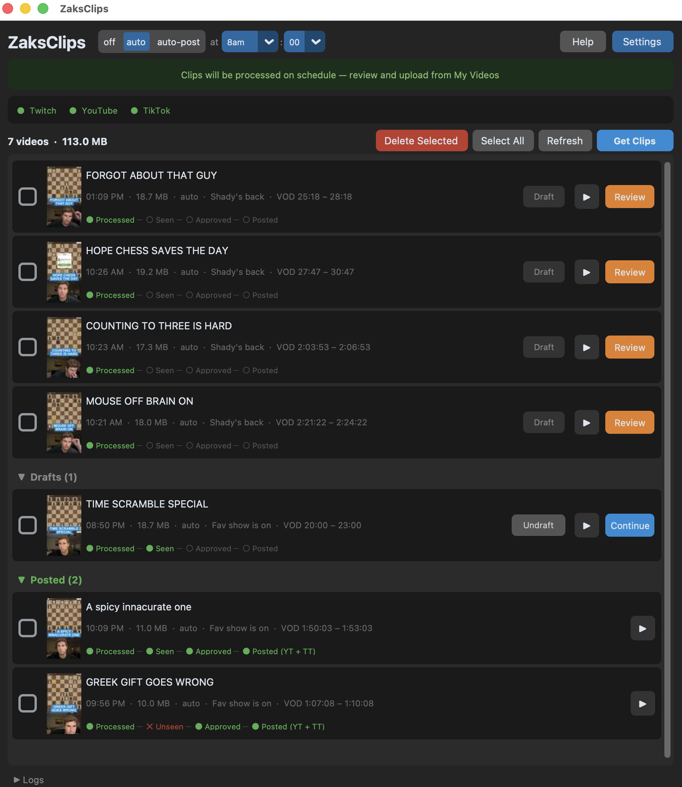

ZaksClips
A free, open-source desktop app that automates the post-stream clip workflow for chess content creators. Runs entirely on your local machine with no server or cloud backend.

What it does
- Fetches your recent clips from the Twitch API (day-by-day to catch every clip)
- Finds the matching YouTube VOD and downloads the segment around each clip
- Transcribes audio locally using Whisper on Apple Silicon
- Generates a title and caption using AI, trained on the creator's voice and style
- Burns styled captions and a title overlay onto the video with ffmpeg
- Queues videos for review — or uploads automatically on a schedule
- Uploads to YouTube Shorts and TikTok with explicit confirmation
Features
- Schedule modes — off (manual only), auto (batch process daily, review before posting), or auto-post (fully automatic)
- Video review — preview with embedded player, edit title/caption, adjust caption styling and colors, re-trim, re-burn
- Drafts — shelve clips you're not sure about without deleting them
- Scheduled posting — pick a date and time, the app uploads automatically when it's due
- AI voice learning — the AI learns your style over time from what you post and what you reject
- 7 color themes — separate title and caption colors, adjustable positions
- iCloud sync — finished videos auto-copy to iCloud Drive for posting from your phone
Stack
- Python 3 + customtkinter (dark mode GUI)
- mlx-whisper (Apple Silicon optimized transcription)
- ffmpeg (caption burning, title overlays, trimming)
- Twitch Helix API, YouTube Data API v3, TikTok Content Posting API
- Claude Haiku (AI title and caption generation)
- No paid services beyond the AI — everything runs locally
Developer
Open source and free to use. Source code: github.com/zparks/ZaksClips
Terms of Service · Privacy Policy